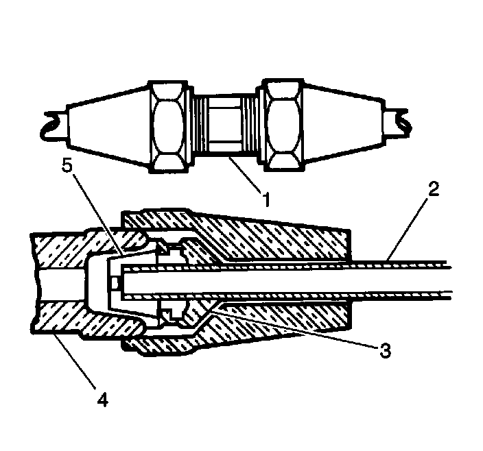

Air Line: Service and Repair
Air Line Tubing Repair
1. Locate the leaking area with soap and water or a stethoscope.

2. Cut and remove the leaking line (2) section.
3. Remove the plastic retainer pin from one of the nuts.
4. Slide the air line tube onto the nut until the line bottoms in the rubber seal (5).
Notice: Refer to Fastener Notice.
5. Hold the air line tube in position.
Tighten the air line tube repair nut to 8 N.m (70 lb in).
6. Install the air line tube to the other end of the coupling.
7. Repeat Steps 3 through 5.
Important: Ensure that the repaired air line tube is secured in a location where the line is not pinched, or kinked, and will not contact the exhaust system.
8. Install the air line tube to the vehicle.
9. Inflate the real time damping level control system and inspect for leaks.